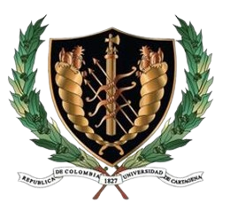
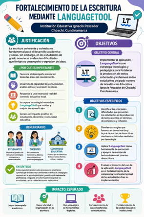
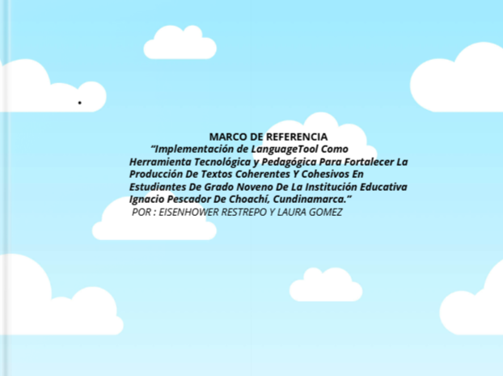

Laura Ximena Gómez Ruiz
Eisenhower Berley Restrepo Maldonado
Christian Fernando Cano Rave
Liris Múnera


La investigación aborda las dificultades que presentan los estudiantes de noveno grado de la Institución Educativa Ignacio Pescador de Choachí, Cundinamarca, en la producción de textos coherentes y cohesivos.
Entre las principales causas se identifican la falta de hábitos de lectura y escritura, el escaso dominio de normas gramaticales y ortográficas, un vocabulario limitado y la desmotivación hacia la escritura académica.
Frente a esta situación se propone implementar LanguageTool como una estrategia tecnológica y pedagógica para fortalecer las competencias de escritura.

Contenido pendiente por suministrar.
Contenido pendiente por suministrar.